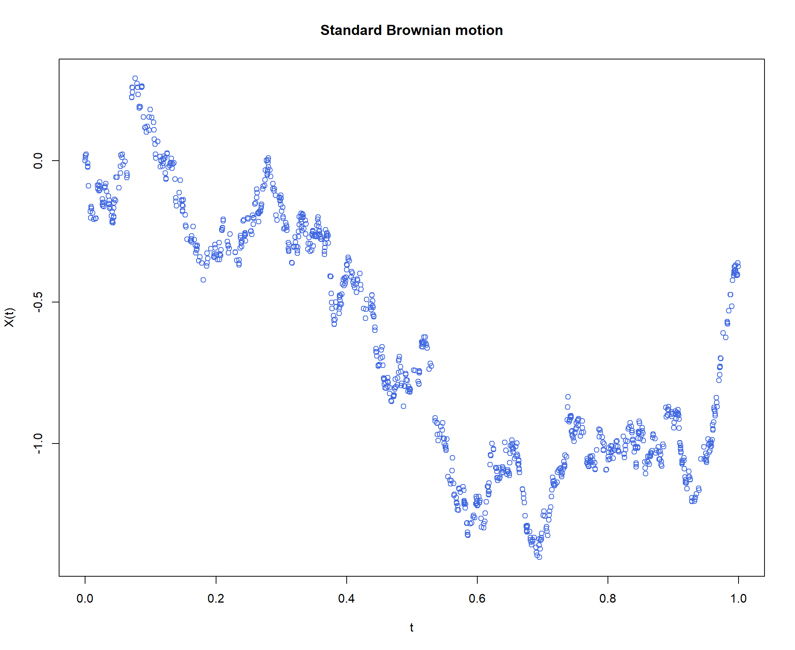
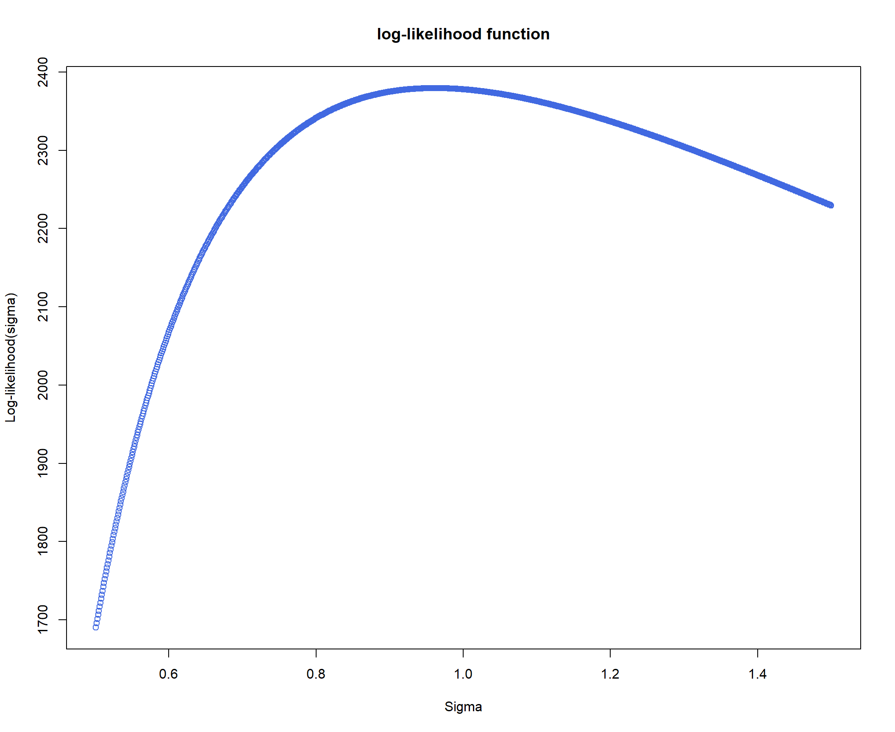
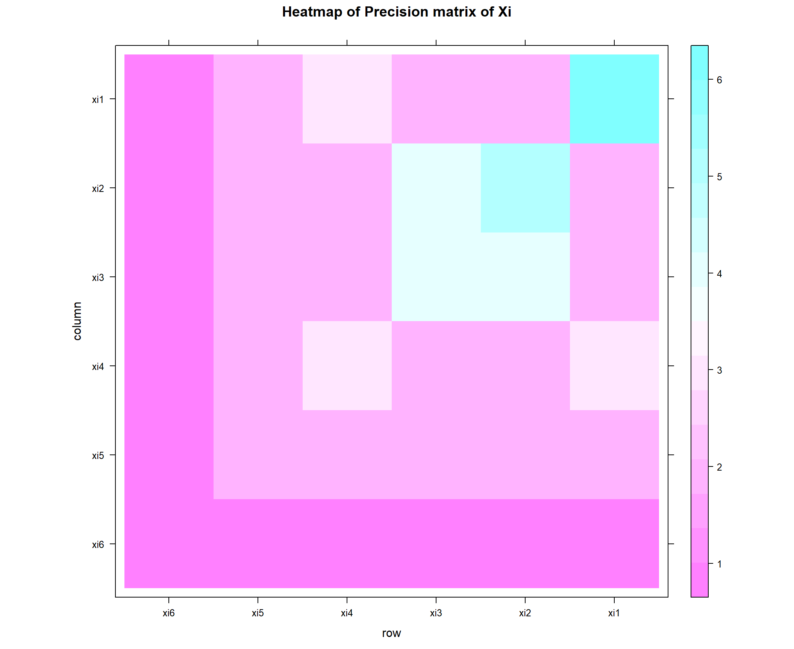
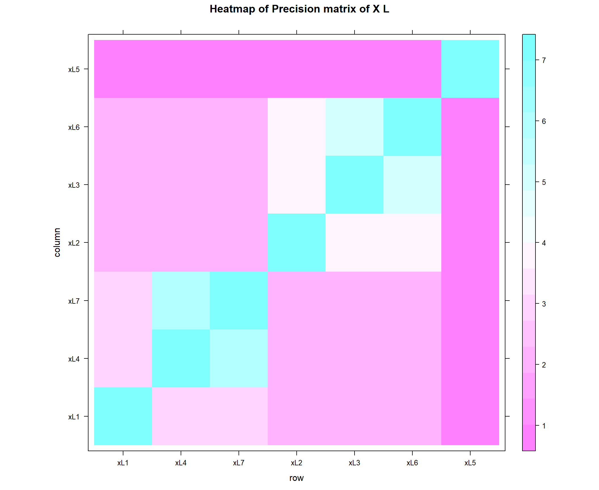

HW7_Brownian_Motion_Gaussian_process
Kiseok Lee
2022-03-05
Last updated: 2022-03-08
Checks: 6 1
Knit directory: fiveMinuteStats/analysis/
This reproducible R Markdown analysis was created with workflowr (version 1.6.2). The Checks tab describes the reproducibility checks that were applied when the results were created. The Past versions tab lists the development history.
Great! Since the R Markdown file has been committed to the Git repository, you know the exact version of the code that produced these results.
Great job! The global environment was empty. Objects defined in the global environment can affect the analysis in your R Markdown file in unknown ways. For reproduciblity it’s best to always run the code in an empty environment.
The command set.seed(12345) was run prior to running the code in the R Markdown file. Setting a seed ensures that any results that rely on randomness, e.g. subsampling or permutations, are reproducible.
Great job! Recording the operating system, R version, and package versions is critical for reproducibility.
Nice! There were no cached chunks for this analysis, so you can be confident that you successfully produced the results during this run.
Using absolute paths to the files within your workflowr project makes it difficult for you and others to run your code on a different machine. Change the absolute path(s) below to the suggested relative path(s) to make your code more reproducible.
| absolute | relative |
|---|---|
| C:/Users/there/Desktop/Computational_Biology_2022_Winter/fiveMinuteStats | .. |
Great! You are using Git for version control. Tracking code development and connecting the code version to the results is critical for reproducibility.
The results in this page were generated with repository version cfae418. See the Past versions tab to see a history of the changes made to the R Markdown and HTML files.
Note that you need to be careful to ensure that all relevant files for the analysis have been committed to Git prior to generating the results (you can use wflow_publish or wflow_git_commit). workflowr only checks the R Markdown file, but you know if there are other scripts or data files that it depends on. Below is the status of the Git repository when the results were generated:
Ignored files:
Ignored: .Rhistory
Ignored: .Rproj.user/
Ignored: analysis/HW7_Brownian_Motion_Gaussian_process.pdf
Ignored: analysis/bernoulli_poisson_process_cache/
Untracked files:
Untracked: data/
Untracked: texput.log
Note that any generated files, e.g. HTML, png, CSS, etc., are not included in this status report because it is ok for generated content to have uncommitted changes.
These are the previous versions of the repository in which changes were made to the R Markdown (analysis/HW7_Brownian_Motion_Gaussian_process.Rmd) and HTML (docs/HW7_Brownian_Motion_Gaussian_process.html) files. If you’ve configured a remote Git repository (see ?wflow_git_remote), click on the hyperlinks in the table below to view the files as they were in that past version.
| File | Version | Author | Date | Message |
|---|---|---|---|---|
| Rmd | cfae418 | Kiseok Lee | 2022-03-08 | wflow_publish(“analysis/HW7_Brownian_Motion_Gaussian_process.Rmd”) |
| html | ae1801a | Kiseok Lee | 2022-03-06 | Build site. |
| Rmd | a7eadcc | Kiseok Lee | 2022-03-06 | wflow_publish(“analysis/HW7_Brownian_Motion_Gaussian_process.Rmd”) |
| html | 3a6c406 | Kiseok Lee | 2022-03-06 | Build site. |
| Rmd | 5a55388 | Kiseok Lee | 2022-03-06 | wflow_publish(“analysis/HW7_Brownian_Motion_Gaussian_process.Rmd”) |
| html | 813579a | Kiseok Lee | 2022-03-06 | Build site. |
| Rmd | 852bdd6 | Kiseok Lee | 2022-03-06 | wflow_publish(“analysis/HW7_Brownian_Motion_Gaussian_process.Rmd”) |
| html | 240bd6b | Kiseok Lee | 2022-03-06 | Build site. |
| Rmd | 05afe44 | Kiseok Lee | 2022-03-06 | wflow_publish(“analysis/HW7_Brownian_Motion_Gaussian_process.Rmd”) |
| html | 165dfc6 | Kiseok Lee | 2022-03-06 | Build site. |
| Rmd | cad4a8a | Kiseok Lee | 2022-03-06 | wflow_publish(“analysis/HW7_Brownian_Motion_Gaussian_process.Rmd”) |
| html | 6fadbaa | Kiseok Lee | 2022-03-06 | Build site. |
| Rmd | bc25563 | Kiseok Lee | 2022-03-06 | wflow_publish(“analysis/HW7_Brownian_Motion_Gaussian_process.Rmd”) |
| html | c341b6e | Kiseok Lee | 2022-03-06 | Build site. |
| Rmd | b961ae9 | Kiseok Lee | 2022-03-06 | wflow_publish(“analysis/HW7_Brownian_Motion_Gaussian_process.Rmd”) |
HW7 Brownian Motion, Gaussian processes
Name: Kiseok Lee
Date: 3/5/22
Class: HGEN 486 Computational Biology
A. Brownian Motion
A-a) Standard Brownian motion
\[ X_{t+\mu} | X_t \sim N(0, \mu) \]
Let’s simulate this standard Brownian motion and plot
simulate_standard_Brownian = function(length = 1000) {
t = c(0, runif(999, min = 0, max = 1))
# increasing order
t = t[order(t)]
# Now Brownian motion
X = rep(0, length)
X[1] = 0 # X(0) = 0
for (k in 2:length) {
# print(k)
X[k] = X[k - 1] + rnorm(1, mean = 0, sd = sqrt(t[k] -
t[k - 1]))
}
return(list(X = X, t = t))
}
set.seed(100)
standard_sim <- simulate_standard_Brownian(length = 1000)
plot(standard_sim$t, standard_sim$X, xlab = "t", ylab = "X(t)",
main = paste0("Standard Brownian motion"), col = "royalblue")
A-b) Scaled Brownian motion
variance parameter \[\sigma ^ 2 \]
Markov chain \[ X_{t+\mu} | X_t \sim N(0, \mu \sigma ^ 2) \]
likelihood of data given \(\sigma\) where standard deviation of the normal distribution is \[ \sigma \sqrt{t_{k} - t_{k-1}} \]
\[ P(X | \sigma) = \prod_{i=2}^k \frac{1}{\sigma\sqrt{2\pi(t_i-t_{i-1})}} e^{-\frac{1}{2}({\frac{X_i - X_{i-1}}{\sigma \sqrt{(t_i-t_{i-1})}}})^2} \] log-likelihood
\[ log P(X | \sigma)= \sum_{i=2}^k ( -\frac{1}{2}({\frac{X_i - X_{i-1}}{\sigma \sqrt{(t_i-t_{i-1})}}})^2 - log(\sigma\sqrt{2\pi(t_i-t_{i-1})}) ) \]
Plot the log-likelihood as a function of \(\sigma\)
calculate_loglikelihood <- function(sigma = 1, standard_sim) {
vec_ll <- c() # vector to store log-likelihood
X = standard_sim$X
t = standard_sim$t
# -0.5 * ( (X[2] - X[1]) / (sigma*(t[2]-t[1])))^2 -
# log( sigma * sqrt(2*pi* (t[2]-t[1]) )) loop
for (i in 2:length(t)) {
ll <- -0.5 * ((X[i] - X[i - 1])/(sigma * sqrt(t[i] -
t[i - 1])))^2 - log(sigma * sqrt(2 * pi * (t[i] -
t[i - 1])))
# print(paste0('front: ', -0.5 * ( (X[i] - X[i-1])
# / (sigma*sqrt(t[i]-t[i-1]) ) )^2))
# print(paste0('back: ', - log( sigma * sqrt(2*pi*
# (t[i]-t[i-1]) )))) print(paste0('back inside log:
# ', ( sigma * sqrt(2*pi* (t[i]-t[i-1]) ))))
# print(ll)
vec_ll <- c(vec_ll, ll)
}
# print(length(vec_ll)) print(sum(vec_ll))
return(sum(vec_ll))
}
# when sigma is 1
calculate_loglikelihood(sigma = 1, standard_sim)[1] 2378.061
# plot for sigma values between 0 to 1
vec_loglikelihood <- c()
vec_sigma <- seq(0, 1, length.out = 1000)[-1]
for (sig in vec_sigma) {
# calculate_loglikelihood(sigma = sig, standard_sim)
vec_loglikelihood <- c(vec_loglikelihood, calculate_loglikelihood(sigma = sig,
standard_sim))
}
# plot
plot(vec_sigma, vec_loglikelihood, xlab = "Sigma", ylab = "Log-likelihood(sigma)",
main = paste0("log-likelihood function"), col = "royalblue")Let’s magnify the area between 0.001 and 1
# plot for sigma values between 0.001 to 1
vec_loglikelihood <- c()
vec_sigma <- seq(0.001, 1, length.out = 1000)[-1]
for (sig in vec_sigma) {
# calculate_loglikelihood(sigma = sig, standard_sim)
vec_loglikelihood <- c(vec_loglikelihood, calculate_loglikelihood(sigma = sig,
standard_sim))
}
# plot
plot(vec_sigma, vec_loglikelihood, xlab = "Sigma", ylab = "Log-likelihood(sigma)",
main = paste0("log-likelihood function"), col = "royalblue")# find maximum
max(vec_loglikelihood) # 2379.556[1] 2379.556
vec_sigma[which.max(vec_loglikelihood)] # 0.962[1] 0.962
Let’s zoom in between 0.5 and 1.5
# plot for sigma values between 0.5 and 1.5
vec_loglikelihood <- c()
vec_sigma <- seq(0.5, 1.5, length.out = 1000)[-1]
for (sig in vec_sigma) {
# calculate_loglikelihood(sigma = sig, standard_sim)
vec_loglikelihood <- c(vec_loglikelihood, calculate_loglikelihood(sigma = sig,
standard_sim))
}
# plot
plot(vec_sigma, vec_loglikelihood, xlab = "Sigma", ylab = "Log-likelihood(sigma)",
main = paste0("log-likelihood function"), col = "royalblue")
# find maximum
max(vec_loglikelihood) # 2379.556[1] 2379.556
vec_sigma[which.max(vec_loglikelihood)] # 0.9614615[1] 0.9614615
Maximum log-likelihood is acheived at sigma of approximately 1
A-c) Brownian motion in the tree
Consider the tree in Figure 1 of the Mau et al paper http://www.ncbi.nlm.nih.gov/pubmed/11318142 with leafs labelled 1 to 7.
Brownian motion \[ X_{5}^i | X_{6}^i \sim N(0, t_6) \]
\[ X_{4}^i | X_{5}^i \sim N(0, t_5) \] \[ X_{3}^i | X_{5}^i \sim N(0, t_4+t_5) \]
\[ X_{2}^i | X_{3}^i \sim N(0, t_3) \] \[ X_{1}^i | X_{4}^i \sim N(0, t_4+t_3+t_2) \]
\[ X_{1}^L | X_{4}^i \sim N(0, t_4+t_3+t_2+t_1) \]
\[ X_{4}^L | X_{1}^i \sim N(0, t_1) \]
\[ X_{7}^L | X_{1}^i \sim N(0, t_1) \] \[ X_{2}^L | X_{3}^i \sim N(0, t_3+t_2+t_1) \]
\[ X_{3}^L | X_{2}^i \sim N(0, t_1) \] \[ X_{6}^L | X_{2}^i \sim N(0, t_1) \]
\[ X_{5}^L | X_{6}^i \sim N(0, t_6+t_5+t_4+t_3+t_2+t_1) \] ## A-c-1) Simulated value of \(X^i\), \(X^L\) given the coalescent times (t1, t2, …, t6)
set.seed(1)
t = rnorm(6, mean = 1, sd = 0.5)
xi6 = 0
# X_{5}^i | X_{6}^i \sim N(0, t_6)
xi5 = xi6 + rnorm(1, mean = 0, sd = sqrt(t[6]))
# X_{4}^i | X_{5}^i \sim N(0, t_5)
xi4 = xi5 + rnorm(1, mean = 0, sd = sqrt(t[5]))
# X_{3}^i | X_{5}^i \sim N(0, t_4+t_5)
xi3 = xi5 + rnorm(1, mean = 0, sd = sqrt(t[5] + t[4]))
# X_{2}^i | X_{3}^i \sim N(0, t_3)
xi2 = xi3 + rnorm(1, mean = 0, sd = sqrt(t[3]))
# X_{1}^i | X_{4}^i \sim N(0, t_4+t_3+t_2)
xi1 = xi4 + rnorm(1, mean = 0, sd = sqrt(t[4] + t[3] + t[2]))
# X_{1}^L | X_{4}^i \sim N(0, t_4+t_3+t_2+t_1)
xL1 = xi4 + rnorm(1, mean = 0, sd = sqrt(t[4] + t[3] + t[2] +
t[1]))
# X_{4}^L | X_{1}^i \sim N(0, t_1)
xL4 = xi1 + rnorm(1, mean = 0, sd = sqrt(t[1]))
# X_{7}^L | X_{1}^i \sim N(0, t_1)
xL7 = xi1 + rnorm(1, mean = 0, sd = sqrt(t[1]))
# X_{2}^L | X_{3}^i \sim N(0, t_3+t_2+t_1)
xL2 = xi3 + rnorm(1, mean = 0, sd = sqrt(t[3] + t[2] + t[1]))
# X_{3}^L | X_{2}^i \sim N(0, t_1)
xL3 = xi2 + rnorm(1, mean = 0, sd = sqrt(t[1]))
# X_{6}^L | X_{2}^i \sim N(0, t_1)
xL6 = xi2 + rnorm(1, mean = 0, sd = sqrt(t[1]))
# X_{5}^L | X_{6}^i \sim N(0, t_6+t_5+t_4+t_3+t_2+t_1)
xL5 = xi6 + rnorm(1, mean = 0, sd = sqrt(t[6] + t[5] + t[4] +
t[3] + t[2] + t[1]))
vec_x = c(xi6, xi5, xi4, xi3, xi2, xi1, xL1, xL4, xL7, xL2, xL3,
xL6, xL5)
vec_x[1] 0.000000 0.374327 1.171155 1.365339 1.132325 3.987960 1.966131 3.473127 [9] 2.152599 3.093777 1.095087 1.118907 2.295083
# write it into function
simulate_xi_xL <- function(t) {
xi6 = 0
# X_{5}^i | X_{6}^i \sim N(0, t_6)
xi5 = xi6 + rnorm(1, mean = 0, sd = sqrt(t[6]))
# X_{4}^i | X_{5}^i \sim N(0, t_5)
xi4 = xi5 + rnorm(1, mean = 0, sd = sqrt(t[5]))
# X_{3}^i | X_{5}^i \sim N(0, t_4+t_5)
xi3 = xi5 + rnorm(1, mean = 0, sd = sqrt(t[5] + t[4]))
# X_{2}^i | X_{3}^i \sim N(0, t_3)
xi2 = xi3 + rnorm(1, mean = 0, sd = sqrt(t[3]))
# X_{1}^i | X_{4}^i \sim N(0, t_4+t_3+t_2)
xi1 = xi4 + rnorm(1, mean = 0, sd = sqrt(t[4] + t[3] + t[2]))
# X_{1}^L | X_{4}^i \sim N(0, t_4+t_3+t_2+t_1)
xL1 = xi4 + rnorm(1, mean = 0, sd = sqrt(t[4] + t[3] + t[2] +
t[1]))
# X_{4}^L | X_{1}^i \sim N(0, t_1)
xL4 = xi1 + rnorm(1, mean = 0, sd = sqrt(t[1]))
# X_{7}^L | X_{1}^i \sim N(0, t_1)
xL7 = xi1 + rnorm(1, mean = 0, sd = sqrt(t[1]))
# X_{2}^L | X_{3}^i \sim N(0, t_3+t_2+t_1)
xL2 = xi3 + rnorm(1, mean = 0, sd = sqrt(t[3] + t[2] + t[1]))
# X_{3}^L | X_{2}^i \sim N(0, t_1)
xL3 = xi2 + rnorm(1, mean = 0, sd = sqrt(t[1]))
# X_{6}^L | X_{2}^i \sim N(0, t_1)
xL6 = xi2 + rnorm(1, mean = 0, sd = sqrt(t[1]))
# X_{5}^L | X_{6}^i \sim N(0, t_6+t_5+t_4+t_3+t_2+t_1)
xL5 = xi6 + rnorm(1, mean = 0, sd = sqrt(t[6] + t[5] + t[4] +
t[3] + t[2] + t[1]))
vec_x = c(xi6, xi5, xi4, xi3, xi2, xi1, xL1, xL4, xL7, xL2,
xL3, xL6, xL5)
return(vec_x)
}A-c-2) assume tj=1 and compute covariance matrix for x
Here, we need to create matrix A. Let’s assign z1, z2, z3, z4, z5, …, z11, z12 as links that connect nodes. z0: root z1: connecting xi6, xi5
z2: connecting xi5, xi4
z3: connecting xi5, xi3
z4: connecting xi3, xi2
z5: connecting xi4, xi1
z6: connecting xi4, xL1
z7: connecting xi1, xL4
z8: connecting xi1, xL7
z9: connecting xi3, xL2
z10: connecting xi2, xL3
z11: connecting xi2, xL6
z12: connecting xi6, xL5
Then, each row of A can be constructed based on the linear combination of links that each node can be reached from root (xi6)
t = rep(1, 6)
simulate_xi_xL(t)[1] 0.0000000 0.8212212 1.4151225 2.1208515 2.9029878 1.5442729 [7] -2.5635809 2.1640986 1.4881441 1.8510057 1.4322354 2.4248377 [13] 1.0237436
# length of link z (squre root of the time)
length_z = sqrt(c(1, 1, 1, 2, 1, 3, 4, 1, 1, 3, 2, 2, 6))
# xi6
row1 = c(1, 0, 0, 0, 0, 0, 0, 0, 0, 0, 0, 0, 0)
row1 = row1 * length_z
# xi5
row2 = c(1, 1, 0, 0, 0, 0, 0, 0, 0, 0, 0, 0, 0)
row2 = row2 * length_z
# xi4
row3 = c(1, 1, 1, 0, 0, 0, 0, 0, 0, 0, 0, 0, 0)
row3 = row3 * length_z
# xi3
row4 = c(1, 1, 0, 1, 0, 0, 0, 0, 0, 0, 0, 0, 0)
row4 = row4 * length_z
# xi2
row5 = c(1, 1, 0, 1, 1, 0, 0, 0, 0, 0, 0, 0, 0)
row5 = row5 * length_z
# xi1
row6 = c(1, 1, 1, 0, 0, 1, 0, 0, 0, 0, 0, 0, 0)
row6 = row6 * length_z
# xL1
row7 = c(1, 1, 1, 0, 0, 0, 1, 0, 0, 0, 0, 0, 0)
row7 = row7 * length_z
# xL4
row8 = c(1, 1, 1, 0, 0, 1, 0, 1, 0, 0, 0, 0, 0)
row8 = row8 * length_z
# xL7
row9 = c(1, 1, 1, 0, 0, 1, 0, 0, 1, 0, 0, 0, 0)
row9 = row9 * length_z
# xL2
row10 = c(1, 1, 0, 1, 0, 0, 0, 0, 0, 1, 0, 0, 0)
row10 = row10 * length_z
# xL3
row11 = c(1, 1, 0, 1, 1, 0, 0, 0, 0, 0, 1, 0, 0)
row11 = row11 * length_z
# xL6
row12 = c(1, 1, 0, 1, 1, 0, 0, 0, 0, 0, 0, 1, 0)
row12 = row12 * length_z
# xL5
row13 = c(1, 0, 0, 0, 0, 0, 0, 0, 0, 0, 0, 0, 1)
row13 = row13 * length_z
mat_A = rbind(row1, row2, row3, row4, row5, row6, row7, row8,
row9, row10, row11, row12, row13)
mat_covariance = mat_A %*% t(mat_A)
mat_covariance row1 row2 row3 row4 row5 row6 row7 row8 row9 row10 row11 row12 row13row1 1 1 1 1 1 1 1 1 1 1 1 1 1 row2 1 2 2 2 2 2 2 2 2 2 2 2 1 row3 1 2 3 2 2 3 3 3 3 2 2 2 1 row4 1 2 2 4 4 2 2 2 2 4 4 4 1 row5 1 2 2 4 5 2 2 2 2 4 5 5 1 row6 1 2 3 2 2 6 3 6 6 2 2 2 1 row7 1 2 3 2 2 3 7 3 3 2 2 2 1 row8 1 2 3 2 2 6 3 7 6 2 2 2 1 row9 1 2 3 2 2 6 3 6 7 2 2 2 1 row10 1 2 2 4 4 2 2 2 2 7 4 4 1 row11 1 2 2 4 5 2 2 2 2 4 7 5 1 row12 1 2 2 4 5 2 2 2 2 4 5 7 1 row13 1 1 1 1 1 1 1 1 1 1 1 1 7
A-c-3) Confirm that my simulation agrees with covariance matrix
# simulate 10000 times
t = rep(1, 6)
mat_data <- simulate_xi_xL(t)
for (i in 1:9999) {
mat_data <- rbind(mat_data, simulate_xi_xL(t))
}
dim(mat_data)[1] 10000 13
colnames(mat_data) = c("xi6", "xi5", "xi4", "xi3", "xi2", "xi1",
"xL1", "xL4", "xL7", "xL2", "xL3", "xL6", "xL5")
cov(mat_data)xi6 xi5 xi4 xi3 xi2 xi1 xL1xi6 0 0.00000000 0.00000000 0.0000000 0.0000000000 0.00000000 0.00000000 xi5 0 0.98814606 0.99220429 0.9728198 0.9613143587 1.01047440 0.97878373 xi4 0 0.99220429 1.97613137 0.9947283 0.9750676112 1.99453631 1.99317204 xi3 0 0.97281984 0.99472826 2.9991153 2.9926083214 0.99486406 0.97310723 xi2 0 0.96131436 0.97506761 2.9926083 4.0027913166 0.97897520 0.93942000 xi1 0 1.01047440 1.99453631 0.9948641 0.9789751997 5.04548030 1.99207642 xL1 0 0.97878373 1.99317204 0.9731072 0.9394200037 1.99207642 6.06496882 xL4 0 1.01221116 1.98958593 0.9840289 0.9640890336 5.01548743 1.99621232 xL7 0 1.03650946 2.02177264 1.0196828 0.9932661457 5.06574058 1.98823263 xL2 0 0.97492689 1.01199244 2.9991436 2.9632574952 1.00257209 0.98682364 xL3 0 0.95335171 0.96302536 2.9624761 3.9756320300 0.94435776 0.93240137 xL6 0 0.96501541 0.98304424 3.0011934 4.0239840359 0.98953933 0.95462845 xL5 0 -0.02728058 0.02933652 -0.0563075 0.0004173819 0.07995824 0.03207477 xL4 xL7 xL2 xL3 xL6 xL5 xi6 0.00000000 0.0000000 0.0000000 0.00000000 0.00000000 0.0000000000 xi5 1.01221116 1.0365095 0.9749269 0.95335171 0.96501541 -0.0272805834 xi4 1.98958593 2.0217726 1.0119924 0.96302536 0.98304424 0.0293365205 xi3 0.98402888 1.0196828 2.9991436 2.96247607 3.00119339 -0.0563075039 xi2 0.96408903 0.9932661 2.9632575 3.97563203 4.02398404 0.0004173819 xi1 5.01548743 5.0657406 1.0025721 0.94435776 0.98953933 0.0799582371 xL1 1.99621232 1.9882326 0.9868236 0.93240137 0.95462845 0.0320747747 xL4 5.97138303 5.0342364 0.9641668 0.93751436 0.95925286 0.0994882314 xL7 5.03423637 6.0911917 1.0356559 0.96218163 0.99930259 0.0714794020 xL2 0.96416675 1.0356559 6.0510236 2.95052136 2.95466706 -0.1287465443 xL3 0.93751436 0.9621816 2.9505214 4.95252025 3.99328948 0.0361787906 xL6 0.95925286 0.9993026 2.9546671 3.99328948 5.06388238 -0.0288493484 xL5 0.09948823 0.0714794 -0.1287465 0.03617879 -0.02884935 5.9950143442
# covariance matrix with simulation
library(lattice)
levelplot(cov(mat_data), main = "simulation (Problem A-c-1)")a <- levelplot(cov(mat_data), main = "simulation (Problem A-c-1)")
# covariance matrix with logical structuring of z get
# matrix from problem A-c-2)
colnames(mat_covariance) = c("xi6", "xi5", "xi4", "xi3", "xi2",
"xi1", "xL1", "xL4", "xL7", "xL2", "xL3", "xL6", "xL5")
rownames(mat_covariance) = c("xi6", "xi5", "xi4", "xi3", "xi2",
"xi1", "xL1", "xL4", "xL7", "xL2", "xL3", "xL6", "xL5")
levelplot(mat_covariance, main = "logical structuring of z (Problem A-c-2))")b <- levelplot(mat_covariance, main = "logical structuring of z (Problem A-c-2))")
# plot and compare
library(gridExtra)
grid.arrange(a, b, ncol = 2)They roughly agree.
A-c-4) Precision matrix
Calculate the precision matrix with the covariance matrix from problem A-c-2
library(matlib)
# covariance matrix from the problem A-c-2
mat_Omega <- inv(mat_covariance)
colnames(mat_Omega) = c("xi6", "xi5", "xi4", "xi3", "xi2", "xi1",
"xL1", "xL4", "xL7", "xL2", "xL3", "xL6", "xL5")
rownames(mat_Omega) = c("xi6", "xi5", "xi4", "xi3", "xi2", "xi1",
"xL1", "xL4", "xL7", "xL2", "xL3", "xL6", "xL5")
levelplot(mat_Omega, main = "Heatmap of Precision matrix (total)")p1 <- levelplot(mat_Omega, main = "Heatmap of Precision matrix (total)")
# find covariance matrix for xi
cov_xi <- mat_covariance[c("xi6", "xi5", "xi4", "xi3", "xi2",
"xi1"), c("xi6", "xi5", "xi4", "xi3", "xi2", "xi1")]
cov_xixi6 xi5 xi4 xi3 xi2 xi1xi6 1 1 1 1 1 1 xi5 1 2 2 2 2 2 xi4 1 2 3 2 2 3 xi3 1 2 2 4 4 2 xi2 1 2 2 4 5 2 xi1 1 2 3 2 2 6
# inverse
inv(cov_xi)[1,] 2 -1.0 0.0000000 0.0 0 0.0000000 [2,] -1 2.5 -1.0000000 -0.5 0 0.0000000 [3,] 0 -1.0 1.3333333 0.0 0 -0.3333333 [4,] 0 -0.5 0.0000000 1.5 -1 0.0000000 [5,] 0 0.0 0.0000000 -1.0 1 0.0000000 [6,] 0 0.0 -0.3333333 0.0 0 0.3333333
levelplot(cov_xi, main = "Heatmap of Precision matrix of Xi")
p2 <- levelplot(cov_xi, main = "Heatmap of Precision matrix of Xi")
# find covariance matrix for xL
cov_xL <- mat_covariance[c("xL1", "xL4", "xL7", "xL2", "xL3",
"xL6", "xL5"), c("xL1", "xL4", "xL7", "xL2", "xL3", "xL6",
"xL5")]
cov_xLxL1 xL4 xL7 xL2 xL3 xL6 xL5xL1 7 3 3 2 2 2 1 xL4 3 7 6 2 2 2 1 xL7 3 6 7 2 2 2 1 xL2 2 2 2 7 4 4 1 xL3 2 2 2 4 7 5 1 xL6 2 2 2 4 5 7 1 xL5 1 1 1 1 1 1 7
# inverse
inv(cov_xL)[1,] 0.18721461 -0.03587736 -0.03587736 -0.01696021 -0.01272016 -0.01272016 [2,] -0.03587736 0.55092722 -0.44907278 -0.00969155 -0.00726866 -0.00726866 [3,] -0.03587736 -0.44907278 0.55092722 -0.00969155 -0.00726866 -0.00726866 [4,] -0.01696021 -0.00969155 -0.00969155 0.23697698 -0.07226726 -0.07226726 [5,] -0.01272016 -0.00726866 -0.00726866 -0.07226726 0.32079955 -0.17920045 [6,] -0.01272016 -0.00726866 -0.00726866 -0.07226726 -0.17920045 0.32079955 [7,] -0.01043705 -0.00596403 -0.00596403 -0.00801416 -0.00601062 -0.00601062
[1,] -0.01043705 [2,] -0.00596403 [3,] -0.00596403 [4,] -0.00801416 [5,] -0.00601062 [6,] -0.00601062 [7,] 0.14891436
levelplot(cov_xL, main = "Heatmap of Precision matrix of X L")
p3 <- levelplot(cov_xL, main = "Heatmap of Precision matrix of X L")
# plot simultaneously
library(gridExtra)
grid.arrange(p1, p2, p3, ncol = 3)Calculate the precision matrix with the covariance matrix from problem A-c-3 (simulation-based)
library(matlib)
# covariance matrix from the problem A-c-3
library(pracma)
mat_covariance_sim <- cov(mat_data)
mat_Omega <- pinv(mat_covariance_sim) # use pseudo inverse, due to the matrix being singular
colnames(mat_Omega) = c("xi6", "xi5", "xi4", "xi3", "xi2", "xi1",
"xL1", "xL4", "xL7", "xL2", "xL3", "xL6", "xL5")
rownames(mat_Omega) = c("xi6", "xi5", "xi4", "xi3", "xi2", "xi1",
"xL1", "xL4", "xL7", "xL2", "xL3", "xL6", "xL5")
levelplot(mat_Omega, main = "Heatmap of Precision matrix (total, simulation)")p1 <- levelplot(mat_Omega, main = "Heatmap of Precision matrix (total, simulation)")
# find covariance matrix for xi
cov_xi <- mat_covariance_sim[c("xi6", "xi5", "xi4", "xi3", "xi2",
"xi1"), c("xi6", "xi5", "xi4", "xi3", "xi2", "xi1")]
cov_xixi6 xi5 xi4 xi3 xi2 xi1xi6 0 0.0000000 0.0000000 0.0000000 0.0000000 0.0000000 xi5 0 0.9881461 0.9922043 0.9728198 0.9613144 1.0104744 xi4 0 0.9922043 1.9761314 0.9947283 0.9750676 1.9945363 xi3 0 0.9728198 0.9947283 2.9991153 2.9926083 0.9948641 xi2 0 0.9613144 0.9750676 2.9926083 4.0027913 0.9789752 xi1 0 1.0104744 1.9945363 0.9948641 0.9789752 5.0454803
# inverse
pinv(cov_xi) [,1] [,2] [,3] [,4] [,5] [,6][1,] 0 0.000000000 0.000000000 0.000000000 0.000000000 0.000000000 [2,] 0 2.498547547 -1.007178925 -0.479070591 0.005629627 -0.008872205 [3,] 0 -1.007178925 1.350773560 -0.021357096 0.009491706 -0.329895876 [4,] 0 -0.479070591 -0.021357096 1.478581274 -0.986201637 0.004194972 [5,] 0 0.005629627 0.009491706 -0.986201637 0.983795465 -0.001307100 [6,] 0 -0.008872205 -0.329895876 0.004194972 -0.001307100 0.329812135
levelplot(cov_xi, main = "Heatmap of Precision matrix of Xi(simulation)")p2 <- levelplot(cov_xi, main = "Heatmap of Precision matrix of Xi(simulation)")
# find covariance matrix for xL
cov_xL <- mat_covariance_sim[c("xL1", "xL4", "xL7", "xL2", "xL3",
"xL6", "xL5"), c("xL1", "xL4", "xL7", "xL2", "xL3", "xL6",
"xL5")]
cov_xL xL1 xL4 xL7 xL2 xL3 xL6xL1 6.06496882 1.99621232 1.9882326 0.9868236 0.93240137 0.95462845 xL4 1.99621232 5.97138303 5.0342364 0.9641668 0.93751436 0.95925286 xL7 1.98823263 5.03423637 6.0911917 1.0356559 0.96218163 0.99930259 xL2 0.98682364 0.96416675 1.0356559 6.0510236 2.95052136 2.95466706 xL3 0.93240137 0.93751436 0.9621816 2.9505214 4.95252025 3.99328948 xL6 0.95462845 0.95925286 0.9993026 2.9546671 3.99328948 5.06388238 xL5 0.03207477 0.09948823 0.0714794 -0.1287465 0.03617879 -0.02884935 xL5 xL1 0.03207477 xL4 0.09948823 xL7 0.07147940 xL2 -0.12874654 xL3 0.03617879 xL6 -0.02884935 xL5 5.99501434
# inverse
inv(cov_xL) xL1 xL4 xL7 xL2 xL3xL1 0.1904658106 -0.0350043655 -0.0282459360 -0.0114434152 -0.0087769914 xL4 -0.0350043655 0.5601755914 -0.4494152622 -0.0006838099 -0.0090003115 xL7 -0.0282459360 -0.4494152622 0.5486840302 -0.0124417786 -0.0007934824 xL2 -0.0114434152 -0.0006838099 -0.0124417786 0.2455493154 -0.0822604594 xL3 -0.0087769914 -0.0090003115 -0.0007934824 -0.0822604594 0.5848713467 xL6 -0.0101047266 -0.0033528188 -0.0099296077 -0.0736294322 -0.4097462457 xL5 -0.0003427676 -0.0037269856 0.0007570147 0.0056363427 -0.0070621912 xL6 xL5 xL1 -0.010104727 -0.0003427676 xL4 -0.003352819 -0.0037269856 xL7 -0.009929608 0.0007570147 xL2 -0.073629432 0.0056363427 xL3 -0.409746246 -0.0070621912 xL6 0.568078388 0.0038533211 xL5 0.003853321 0.1670421360
levelplot(cov_xL, main = "Heatmap of Precision matrix of X L(simulation)")p3 <- levelplot(cov_xL, main = "Heatmap of Precision matrix of X L(simulation)")
# plot simultaneously
library(gridExtra)
grid.arrange(p1, p2, p3, ncol = 3)
Both the simulation-based and the graphical model-based covariance matrix produces similar precision matrix.
Component of precision matrix is zero if and only if \(X_i\) and \(X_j\) are conditionally independent given all other coordinates of X.
Therefore, sparsity patterns depends on the conditional dependence/independence of Xs.
When we look at the “Precision matrix of \(X^i\)”, we can see that the sparsity pattern agrees with the Graphical model. In the heatmap, Ignore the diagonal (topright - bottomleft direction), since those are the variance of the same \(X_i\). In the graphical model, \(X_1\) is conditionally dependent on \(X_4\) given all other variables. Also, \(X_2\) is conditionally dependent on \(X_3\) given all other variables. We can see that these two relationship rendering high \(\Omega_ij\) in the precision matrix, whereas other components are close to 0.
When we look at the “Precision matrix of \(X^L\)”, we can see that the sparsity pattern agrees with the Graphical model. In the graphical model, \(X_1\), \(X_4\), \(X_7\) are in the same clade. We can see that in the precision matrix heatmap, \(X_1\), \(X_4\), \(X_7\) can be clustered due to its relatively high \(\Omega_ij\) value. Also, \(X_2\), \(X_3\), \(X_6\) are in the same clade, which is reflected in the precision matrix as well. On the contrary, the leafs that are not in the same clade, especially \(X_5\) (sort of an outgroup of the tree) has low \(\Omega_ij\) with all other leafs.
B. Spatial Gaussian Processes.
Consider the data from http://journals.plos.org/plosbiology/article?id=10.1371/journal.pbio.0030339, available at https://github.com/stephens999/hgen48600/tree/master/data/CCR5 which you can read into R using code from https://stephens999.github.io/hgen48600/ccr5.html
Read and transform the data.
# load data
# setwd('C:/Users/there/Desktop/Computational_Biology_2022_Winter/fiveMinuteStats')
ccr5 = read.table("../data/CCR5.freq.txt", header = TRUE)
ccr5[, 1] = ifelse(ccr5[, 1] > 180, ccr5[, 1] - 360, ccr5[, 1]) # changes longitudes>180 to negative
# transform frequency
ccr5$x = log(ccr5$Freq/(1 - ccr5$Freq))
# note that some x are -Inf
# remove -Inf values from the dataset (This is to ensure
# that dmvnorm works in the later part)
ccr5 = ccr5[ccr5$x != -Inf, ]B-a) Covariance matrix given value of a
\[ \Sigma(y_1, y_2) = K(d(y_1, y_2)) = a_1 exp(-(d/a_2)^2) \]
# compute distance matrix (euclidean distance)
rownames(ccr5)[1] “1” “2” “3” “4” “5” “6” “7” “8” “9” “10” “11” “12” “13” “14” “15” [16] “16” “17” “18” “19” “20” “21” “22” “23” “24” “25” “26” “27” “28” “29” “30” [31] “31” “32” “33” “34” “35” “36” “37” “38” “39” “40” “41” “42” “43” “44” “45” [46] “46” “47” “48” “49” “50” “51” “52” “53” “54” “55” “56” “57” “58” “59” “60” [61] “61” “62” “63” “64” “65” “66” “67” “68”
y_ccr5 <- ccr5[, c("Long", "Lat")]
mat_d <- dist(y_ccr5, diag = T, upper = T)
class(mat_d)[1] “dist”
mat_d <- as.matrix(mat_d)
a1 = 1
a2 = 1
a = c(a1, a2)
# compute covariance matrix with distance matrix
mat_c <- a1 * exp(-(mat_d/a2)^2)
class(mat_c)[1] “matrix” “array”
# is it positive semi-definite?
eigen(mat_c, only.values = T)$values[1] 1.6172017 1.5294986 1.3952727 1.3687310 1.3678794 1.3678794 1.2607939 [8] 1.2413514 1.1718709 1.1358492 1.1353353 1.1347790 1.0183156 1.0067379 [15] 1.0067378 1.0059563 1.0003355 1.0001234 1.0000454 1.0000023 1.0000003 [22] 1.0000000 1.0000000 1.0000000 1.0000000 1.0000000 1.0000000 1.0000000 [29] 1.0000000 1.0000000 1.0000000 1.0000000 1.0000000 1.0000000 1.0000000 [36] 1.0000000 1.0000000 1.0000000 1.0000000 1.0000000 1.0000000 1.0000000 [43] 1.0000000 1.0000000 0.9999977 0.9999546 0.9998766 0.9996645 0.9993307 [50] 0.9956502 0.9932621 0.9932620 0.9816844 0.9816843 0.9815147 0.9795053 [57] 0.8646647 0.8643531 0.8639913 0.8298705 0.7713373 0.7236844 0.6321206 [64] 0.6321206 0.6319381 0.6099453 0.4888170 0.4170729
any(eigen(mat_c, only.values = T)$values < 0)[1] FALSE
# check again with function
library(matrixcalc)
is.positive.semi.definite(mat_c, tol = 1e-08)[1] TRUE
The resulting covariance matrix is valid (it is positive semi-definite) when \(a_1\) and \(a_2\) are 1.
covariance_is_valid <- function(mat_d, a1, a2) {
# compute covariance matrix with distance matrix
mat_c <- a1 * exp(-(mat_d/a2)^2)
class(mat_c)
# is it positive semi-definite?
eigen(mat_c, only.values = T)$values
return(is.positive.semi.definite(mat_c, tol = 1e-08))
}
# test 1
covariance_is_valid(mat_d, a1 = 0.1, a2 = 0.1)[1] TRUE
# test 2
covariance_is_valid(mat_d, a1 = 0.5, a2 = 0.1)[1] TRUE
# test 3
covariance_is_valid(mat_d, a1 = 0.5, a2 = 10)[1] TRUE
The resulting covariance matrix is valid (it is positive semi-definite) for other \(a_1\), \(a_2\) values
B-b) Compute log-likelihood and maximize
# function for computing log-likelihood
compute_ll <- function(ccr5, m, a1, a2) {
# compute covariance matrix with distance matrix
y_ccr5 <- ccr5[, c("Long", "Lat")]
mat_d <- dist(y_ccr5, diag = T, upper = T)
class(mat_d)
mat_d <- as.matrix(mat_d)
mat_c <- a1 * exp(-(mat_d/a2)^2)
# is it positive semi-definite? print('Is covariance
# matrix positive semi-definite?')
# print(is.positive.semi.definite(mat_c, tol=1e-8))
# print(eigen(mat_c, only.values = T)$values)
# get observed X values
X_obs <- ccr5$x
ll <- mvtnorm::dmvnorm(x = X_obs, mean = rep(m, dim(mat_c)[1]),
sigma = mat_c, log = T)
return(ll)
}
compute_ll(ccr5, m = 1, a1 = 1, a2 = 1)[1] -494.7394
# modify function to apply optim function
compute_ll_optim <- function(par, data) {
# par = c('m', 'a1', 'a2')
mat_c <- par[2] * exp(-(mat_d/par[3])^2)
# get observed X values
ll <- mvtnorm::dmvnorm(x = data, mean = rep(par[1], dim(mat_c)[1]),
sigma = mat_c, log = T)
return(-ll) # because optim minimizes, put (-)
}
# Optimize log-likelihood over a, m using optim function
# https://www.magesblog.com/post/2013-03-12-how-to-use-optim-in-r/
X_obs <- ccr5$x
optim(par = c(1, 1, 1), fn = compute_ll_optim, data = X_obs)$par [1] -2.7486638 0.5299463 1.6820251
$value [1] 69.52806
$counts function gradient 148 NA
$convergence [1] 0
$message NULL
optim(par = c(0.1, 0.1, 0.1), fn = compute_ll_optim, data = X_obs)$par [1] -2.7484053 0.5300537 1.6810833
$value [1] 69.52807
$counts function gradient 226 NA
$convergence [1] 0
$message NULL
It converged to m = -2.7486638, a1 = 0.5299463, a2 = 1.6820251. This is pretty stable to initial parameter change
Let’s do a grid search around these values to visualize it in a heatmap.
n = 100
# mv = seq(1e-8, 3, length.out = n)
m = -2.7486638
a1 = seq(0.1, 3, length.out = n)
a2 = seq(0.1, 3, length.out = n)
# mat_ll <- array(-Inf, c(n, n, n))
mat_ll <- matrix(nrow = n, ncol = n)
# 3 dimensional for (m in 1:n){ print(m) for (i in 1:n){
# for (j in 1:n){ mat_ll[m,i,j] <- compute_ll(ccr5, mv[m],
# a1=a1[i], a2=a2[j]) } } }
# 2 dimensional
for (i in 1:n) {
# print(i)
for (j in 1:n) {
mat_ll[i, j] <- compute_ll(ccr5, m, a1 = a1[i], a2 = a2[j])
}
}
# head(mat_ll)
rownames(mat_ll) <- a1
colnames(mat_ll) <- a2
# histogram
hist(c(mat_ll))
# plot heatmap
col_bwr <- colorRampPalette(c("blue", "white", "Red"))
m_ll <- reshape2::melt(mat_ll)
colnames(m_ll) <- c("a1", "a2", "Log-likelihood")
ggplot(data = m_ll, aes(x = a1, y = a2)) + geom_tile(aes(fill = `Log-likelihood`)) +
scale_fill_gradientn(colours = col_bwr(100), na.value = "grey90") +
ylab("a2 \n") + xlab("\n a1 ") + scale_y_continuous(expand = c(0,
0)) + scale_x_continuous(expand = c(0, 0)) + ggtitle("Heatmap of log-likelihood (varying a1, a2) \n") +
mytheme# maximum likelihood
max(mat_ll)[1] -69.53353
which(mat_ll == max(mat_ll), arr.ind = TRUE) row col0.539393939393939 16 55
# find which a1, a2 value
a1[which(mat_ll == max(mat_ll), arr.ind = TRUE)[1]][1] 0.5393939
a2[which(mat_ll == max(mat_ll), arr.ind = TRUE)[2]][1] 1.681818
B-c) Compute log-likelihood and maximize
Conditional expectation of \(X_1\) given \(X_2\), …, \(X_r\)
\[ Y_1 | Y_2 \sim N(\mu, \Sigma)\] \[ \mu = \mu_1 + \Sigma_{12} \Sigma_{22}^{-1}(Y_2 - \mu_2) \]
\[ \Sigma = \Sigma_{11} - \Sigma_{12} \Sigma_{22}^{-1}\Sigma_{21} \] This is an application of standard results for the conditional mean of a Gaussian from, e.g. https://en.wikipedia.org/wiki/Multivariate_normal_distribution#Conditional_distributions.
From our fiveMinute notes: \[ E(Y_1|Y_2) = -(1/\Omega_{11})\Omega_{12}Y_2 \]
where \(\Omega\) is the precision matrix and \(Y_1\) is \(X_1\), \(Y_2\) is (\(X_2\), …, \(X_r\)).
# compute covariance matrix with distance matrix
y_ccr5 <- ccr5[, c("Long", "Lat")]
mat_d <- dist(y_ccr5, diag = T, upper = T)
class(mat_d)[1] “dist”
mat_d <- as.matrix(mat_d)
# Covariance matrix
a1 = 0.5299463
a2 = 1.6820251
mat_c <- a1 * exp(-(mat_d/a2)^2)
# Precision matrix
mat_precision <- inv(mat_c)
# Compute \mu = \mu_1 + \Sigma_{12} \Sigma_{22}^{-1}(Y_2 -
# \mu_2)
X <- ccr5$x
mu_1 = X[1]
dim_mat_c <- dim(mat_c)[2]
Sigma_12 <- mat_c[1, , drop = F][2:dim_mat_c] # \Sigma_{12}
class(Sigma_12)[1] “numeric”
dim(Sigma_12)NULL
Sigma_22 <- mat_c[2:dim_mat_c, 2:dim_mat_c] # \Sigma_{22}^{-1}
dim(Sigma_22)[1] 67 67
Omega_22 <- inv(Sigma_22)
dim(Omega_22)[1] 67 67
Y_2 <- X[2:dim_mat_c] # Y_2
Y_2 - mean(Y_2) # (Y_2 - \mu_2)[1] 1.00017131 0.98521441 0.97010290 0.85962235 0.83477882 0.80948151 [7] 0.75744063 0.74856982 0.66596923 0.66596923 0.65646526 0.61774387 [13] 0.61774387 0.61774387 0.57783236 0.56765829 0.56765829 0.55740285 [19] 0.52613271 0.51553602 0.47223687 0.43875235 0.41591822 0.41591822 [25] 0.36894359 0.35691380 0.30757163 0.30757163 0.29491612 0.29491612 [31] 0.28212658 0.28212658 0.25613253 0.24292125 0.21605236 0.08697053 [37] 0.05624662 -0.02433300 -0.02433300 -0.04114916 -0.05821617 -0.09313592 [43] -0.09313592 -0.11100630 -0.18545235 -0.24471139 -0.24471139 -0.26518377 [49] -0.26518377 -0.28603959 -0.28603959 -0.28603959 -0.35106791 -0.46877877 [55] -0.51965444 -0.81769930 -0.85263125 -1.00516226 -1.04700937 -1.13606783 [61] -1.18360981 -1.34082016 -1.39899639 -1.52619205 -1.52619205 -1.59619963 [67] -1.93672046
# multiply
dim(Sigma_12 %*% Omega_22)[1] 1 67
Sigma_12 %*% Omega_22 %*% (Y_2 - mean(Y_2)) [,1][1,] -0.1217408
mu = mu_1 + Sigma_12 %*% Omega_22 %*% (Y_2 - mean(Y_2))
# wrap it into function
compute_exp_cond_first <- function(mat_c, ccr5) {
# Precision matrix
mat_precision <- inv(mat_c)
# Compute \mu = \mu_1 + \Sigma_{12}
# \Sigma_{22}^{-1}(Y_2 - \mu_2)
X <- ccr5$x
mu_1 = X[1]
dim_mat_c <- dim(mat_c)[2]
Sigma_12 <- mat_c[1, , drop = F][2:dim_mat_c] # \Sigma_{12}
class(Sigma_12)
dim(Sigma_12)
Sigma_22 <- mat_c[2:dim_mat_c, 2:dim_mat_c] # \Sigma_{22}^{-1}
dim(Sigma_22)
Omega_22 <- inv(Sigma_22)
dim(Omega_22)
Y_2 <- X[2:dim_mat_c] # Y_2
Y_2 - mean(Y_2) # (Y_2 - \mu_2)
# multiply
dim(Sigma_12 %*% Omega_22)
Sigma_12 %*% Omega_22 %*% (Y_2 - mean(Y_2))
mu = mu_1 + Sigma_12 %*% Omega_22 %*% (Y_2 - mean(Y_2))
return(mu)
}
compute_exp_cond_first(mat_c, ccr5) [,1][1,] -1.757815
answer: -1.758
Notice that this expectation ends up being a weighted linear combination of the other datapoints. Intuitively, if allele frequencies vary smoothly in space then this weighted linear combination should weight the nearby data points more. Does it?
The weight is determined by Sigma_12 %*% Omega_22. However, it does not seem that this weight vector give more weight to X_2 or X_3 compared to other X.
Repeat this for each of the r datapoints.
# this function only works for r = 2,3,4,...,67 (nrow of
# the matrix -1) compute this for all other X_2, X_3...
# Precision matrix
compute_exp_Xr_cond <- function(mat_c, ccr5, r = 2) {
mat_precision <- inv(mat_c)
# Compute \mu = \mu_1 + \Sigma_{12}
# \Sigma_{22}^{-1}(Y_2 - \mu_2)
X <- ccr5$x
mu_1 = X[r]
dim_mat_c <- dim(mat_c)[2]
Sigma_12 <- mat_c[r, , drop = F][c(1:(r - 1), (r + 1):dim_mat_c)] # \Sigma_{12}
class(Sigma_12)
dim(Sigma_12)
Sigma_22 <- mat_c[c(1:(r - 1), (r + 1):dim_mat_c), c(1:(r -
1), (r + 1):dim_mat_c)] # \Sigma_{22}^{-1}
dim(Sigma_22)
Omega_22 <- inv(Sigma_22)
dim(Omega_22)
Y_2 <- X[c(1:(r - 1), (r + 1):dim_mat_c)] # Y_2
Y_2 - mean(Y_2) # (Y_2 - \mu_2)
# multiply
dim(Sigma_12 %*% Omega_22)
Sigma_12 %*% Omega_22 %*% (Y_2 - mean(Y_2))
mu = mu_1 + Sigma_12 %*% Omega_22 %*% (Y_2 - mean(Y_2))
return(mu)
}
# compute
vec_middle <- c()
for (r in 2:(nrow(mat_c) - 1)) {
# print(r)
mu_r <- compute_exp_Xr_cond(mat_c, ccr5, r)
vec_middle <- c(vec_middle, mu_r)
}
length(vec_middle)[1] 66
vec_middle[1] -1.224617 -1.299924 -1.026259 -1.798740 -1.709679 -1.485647 -1.417014 [8] -1.350783 -1.854711 -1.356266 -1.742532 -1.342490 -1.459067 -1.606622 [15] -1.861533 -2.090308 -2.090589 -1.680297 -1.934899 -2.142387 -2.262485 [22] -2.309269 -2.236445 -2.088814 -1.869665 -2.301496 -2.240443 -2.498986 [29] -1.648594 -2.363483 -1.976553 -2.376273 -2.402144 -2.415547 -2.430576 [36] -3.236374 -2.153978 -2.693547 -2.700576 -2.699549 -2.790354 -2.751426 [43] -2.751535 -2.032550 -2.848668 -2.904907 -2.428991 -2.720902 -3.140217 [50] -2.944403 -2.947033 -2.945710 -2.926516 -3.127178 -3.178140 -3.476155 [57] -3.530239 -3.859709 -3.705409 -3.993962 -3.842009 -3.970004 -4.059541 [64] -4.184591 -4.193554 -4.254599
# compute the last X_r
compute_exp_cond_last <- function(mat_c, ccr5) {
r_last = nrow(mat_c)
# Precision matrix
mat_precision <- inv(mat_c)
# Compute \mu = \mu_1 + \Sigma_{12}
# \Sigma_{22}^{-1}(Y_2 - \mu_2)
X <- ccr5$x
mu_1 = X[r_last]
Sigma_12 <- mat_c[r_last, , drop = F][1:(r_last - 1)] # \Sigma_{12}
class(Sigma_12)
dim(Sigma_12)
Sigma_22 <- mat_c[1:(r_last - 1), 1:(r_last - 1)] # \Sigma_{22}^{-1}
dim(Sigma_22)
Omega_22 <- inv(Sigma_22)
dim(Omega_22)
Y_2 <- X[1:(r_last - 1)] # Y_2
Y_2 - mean(Y_2) # (Y_2 - \mu_2)
# multiply
dim(Sigma_12 %*% Omega_22)
Sigma_12 %*% Omega_22 %*% (Y_2 - mean(Y_2))
mu = mu_1 + Sigma_12 %*% Omega_22 %*% (Y_2 - mean(Y_2))
return(mu)
}
compute_exp_cond_last(mat_c, ccr5) [,1][1,] -4.595113
# vector for all conditional expectations
vec_exp_cond <- c(compute_exp_cond_first(mat_c, ccr5), vec_middle,
compute_exp_cond_last(mat_c, ccr5))
length(vec_exp_cond)[1] 68
vec_exp_cond[1] -1.757815 -1.224617 -1.299924 -1.026259 -1.798740 -1.709679 -1.485647 [8] -1.417014 -1.350783 -1.854711 -1.356266 -1.742532 -1.342490 -1.459067 [15] -1.606622 -1.861533 -2.090308 -2.090589 -1.680297 -1.934899 -2.142387 [22] -2.262485 -2.309269 -2.236445 -2.088814 -1.869665 -2.301496 -2.240443 [29] -2.498986 -1.648594 -2.363483 -1.976553 -2.376273 -2.402144 -2.415547 [36] -2.430576 -3.236374 -2.153978 -2.693547 -2.700576 -2.699549 -2.790354 [43] -2.751426 -2.751535 -2.032550 -2.848668 -2.904907 -2.428991 -2.720902 [50] -3.140217 -2.944403 -2.947033 -2.945710 -2.926516 -3.127178 -3.178140 [57] -3.476155 -3.530239 -3.859709 -3.705409 -3.993962 -3.842009 -3.970004 [64] -4.059541 -4.184591 -4.193554 -4.254599 -4.595113
Comparing the accuracy of this imputation scheme with just using the mean of the other datapoints.
# Accuracy of Kriging
X # observed[1] -1.636074 -1.658228 -1.673185 -1.688296 -1.798777 -1.823621 -1.848918 [8] -1.900959 -1.909830 -1.992430 -1.992430 -2.001934 -2.040656 -2.040656 [15] -2.040656 -2.080567 -2.090741 -2.090741 -2.100997 -2.132267 -2.142863 [22] -2.186163 -2.219647 -2.242481 -2.242481 -2.289456 -2.301486 -2.350828 [29] -2.350828 -2.363483 -2.363483 -2.376273 -2.376273 -2.402267 -2.415478 [36] -2.442347 -2.571429 -2.602153 -2.682732 -2.682732 -2.699549 -2.716616 [43] -2.751535 -2.751535 -2.769406 -2.843852 -2.903111 -2.903111 -2.923583 [50] -2.923583 -2.944439 -2.944439 -2.944439 -3.009467 -3.127178 -3.178054 [57] -3.476099 -3.511031 -3.663562 -3.705409 -3.794467 -3.842009 -3.999220 [64] -4.057396 -4.184591 -4.184591 -4.254599 -4.595120
vec_exp_cond # kriging[1] -1.757815 -1.224617 -1.299924 -1.026259 -1.798740 -1.709679 -1.485647 [8] -1.417014 -1.350783 -1.854711 -1.356266 -1.742532 -1.342490 -1.459067 [15] -1.606622 -1.861533 -2.090308 -2.090589 -1.680297 -1.934899 -2.142387 [22] -2.262485 -2.309269 -2.236445 -2.088814 -1.869665 -2.301496 -2.240443 [29] -2.498986 -1.648594 -2.363483 -1.976553 -2.376273 -2.402144 -2.415547 [36] -2.430576 -3.236374 -2.153978 -2.693547 -2.700576 -2.699549 -2.790354 [43] -2.751426 -2.751535 -2.032550 -2.848668 -2.904907 -2.428991 -2.720902 [50] -3.140217 -2.944403 -2.947033 -2.945710 -2.926516 -3.127178 -3.178140 [57] -3.476155 -3.530239 -3.859709 -3.705409 -3.993962 -3.842009 -3.970004 [64] -4.059541 -4.184591 -4.193554 -4.254599 -4.595113
# calculated distance
sqrt(sum((X - vec_exp_cond)^2))[1] 2.398139
distance calculated against the observed X is only 2.4
# When only using the mean of other datapoints
X # observed[1] -1.636074 -1.658228 -1.673185 -1.688296 -1.798777 -1.823621 -1.848918 [8] -1.900959 -1.909830 -1.992430 -1.992430 -2.001934 -2.040656 -2.040656 [15] -2.040656 -2.080567 -2.090741 -2.090741 -2.100997 -2.132267 -2.142863 [22] -2.186163 -2.219647 -2.242481 -2.242481 -2.289456 -2.301486 -2.350828 [29] -2.350828 -2.363483 -2.363483 -2.376273 -2.376273 -2.402267 -2.415478 [36] -2.442347 -2.571429 -2.602153 -2.682732 -2.682732 -2.699549 -2.716616 [43] -2.751535 -2.751535 -2.769406 -2.843852 -2.903111 -2.903111 -2.923583 [50] -2.923583 -2.944439 -2.944439 -2.944439 -3.009467 -3.127178 -3.178054 [57] -3.476099 -3.511031 -3.663562 -3.705409 -3.794467 -3.842009 -3.999220 [64] -4.057396 -4.184591 -4.184591 -4.254599 -4.595120
vec_mean <- rep(Inf, length(X))
for (i in 1:length(X)) {
# print(i)
vec_mean[i] <- mean(X[-i])
}
# calculate distance
sqrt(sum((X - vec_mean)^2))[1] 6.028869
distance calculated against the observed X is only 6.03, which is larger than the Kriging scheme.
sessionInfo()R version 4.0.3 (2020-10-10)
Platform: x86_64-w64-mingw32/x64 (64-bit)
Running under: Windows 10 x64 (build 22000)
Matrix products: default
locale:
[1] LC_COLLATE=English_United States.1252
[2] LC_CTYPE=English_United States.1252
[3] LC_MONETARY=English_United States.1252
[4] LC_NUMERIC=C
[5] LC_TIME=English_United States.1252
attached base packages:
[1] stats graphics grDevices utils datasets methods base
other attached packages:
[1] matrixcalc_1.0-5 pracma_2.3.3 matlib_0.9.4 gridExtra_2.3
[5] rmarkdown_2.9 ggpubr_0.4.0 ggrepel_0.9.1 ape_5.5
[9] openxlsx_4.2.3 devtools_2.4.0 usethis_2.0.1 gtools_3.8.2
[13] reshape2_1.4.4 readxl_1.3.1 magrittr_2.0.1 forcats_0.5.1
[17] stringr_1.4.0 purrr_0.3.4 readr_1.4.0 tidyr_1.1.3
[21] tibble_3.0.4 tidyverse_1.3.1 vegan_2.5-7 lattice_0.20-41
[25] permute_0.9-5 RColorBrewer_1.1-2 ggplot2_3.3.5 dplyr_1.0.5
[29] knitr_1.37
loaded via a namespace (and not attached):
[1] colorspace_2.0-0 ggsignif_0.6.2 ellipsis_0.3.2 rio_0.5.27
[5] rprojroot_2.0.2 fs_1.5.0 rstudioapi_0.13 farver_2.1.0
[9] remotes_2.4.0 mvtnorm_1.1-2 fansi_0.4.2 lubridate_1.7.10
[13] xml2_1.3.2 splines_4.0.3 cachem_1.0.4 pkgload_1.2.1
[17] jsonlite_1.7.2 workflowr_1.6.2 broom_0.7.9 cluster_2.1.0
[21] dbplyr_2.1.1 compiler_4.0.3 httr_1.4.2 backports_1.2.1
[25] assertthat_0.2.1 Matrix_1.2-18 fastmap_1.1.0 cli_3.0.1
[29] formatR_1.11 later_1.2.0 htmltools_0.5.1.1 prettyunits_1.1.1
[33] tools_4.0.3 gtable_0.3.0 glue_1.4.2 Rcpp_1.0.5
[37] carData_3.0-4 cellranger_1.1.0 jquerylib_0.1.4 vctrs_0.3.8
[41] nlme_3.1-149 crosstalk_1.1.1 xfun_0.29 ps_1.6.0
[45] testthat_3.0.2 rvest_1.0.1 lifecycle_1.0.0 rstatix_0.7.0
[49] MASS_7.3-53 scales_1.1.1 hms_1.1.0 promises_1.2.0.1
[53] parallel_4.0.3 yaml_2.2.1 curl_4.3.2 memoise_2.0.0
[57] sass_0.4.0 stringi_1.5.3 highr_0.9 desc_1.3.0
[61] pkgbuild_1.2.0 zip_2.1.1 rlang_0.4.10 pkgconfig_2.0.3
[65] rgl_0.107.10 evaluate_0.14 labeling_0.4.2 htmlwidgets_1.5.3
[69] tidyselect_1.1.1 processx_3.5.1 plyr_1.8.6 R6_2.5.0
[73] generics_0.1.0 DBI_1.1.1 pillar_1.6.0 haven_2.4.1
[77] whisker_0.4 foreign_0.8-80 withr_2.4.2 mgcv_1.8-33
[81] abind_1.4-5 modelr_0.1.8 crayon_1.4.1 car_3.0-11
[85] utf8_1.1.4 grid_4.0.3 data.table_1.14.0 callr_3.7.0
[89] git2r_0.28.0 reprex_2.0.0 digest_0.6.27 xtable_1.8-4
[93] httpuv_1.6.0 munsell_0.5.0 bslib_0.2.5.1 sessioninfo_1.1.1This site was created with R Markdown